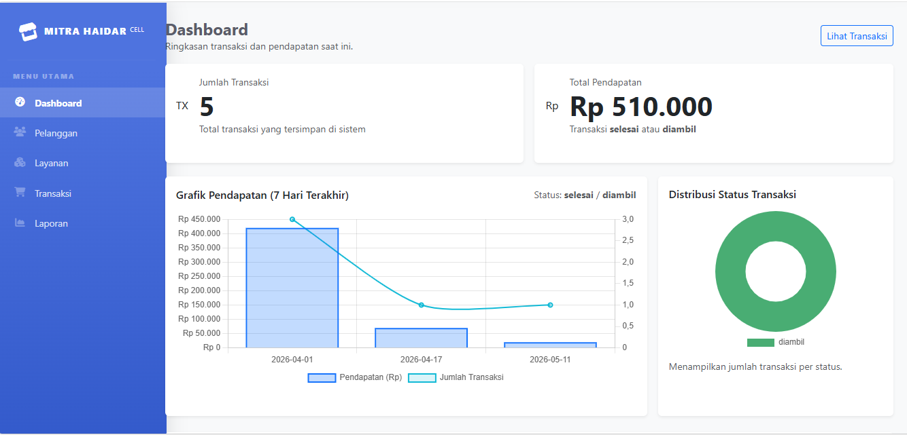

Ibadurrahman Hasan
Web Developer.
Saya mempelajari ilmu PPLG (Pengembangan Perangkat Lunak & Gim), yang bisa membangun Website dengan sistem logic yang aman, dan dapat digunakan user dengan baik.

Tentang Saya
Siapa saya dan apa yang saya lakukan
Saya adalah seorang siswa MAKN ENDE yang memiliki basic Full-Stack Developer. Saya mempelajari Jurusan PPLG (Pengembangan Perangkat Lunak & Gim) Di MAKN ENDE. Dengan latar belakang yang ingin sukses membangun Website yang baik, saya memahami bagaimana menggabungkan logika dengan kreativitas.
Fokus utama saya adalah serius dalam mempelajari Jurusan ini, agar bisa membangun Website bukan hanya bagusnya saja, tetapi juga memiliki antarmuka yang bersih dan intuitif. Saya selalu bersemangat untuk mempelajari teknologi baru.
2+
Tahun Pembelajaran7+
Proyek Selesai2+
Guru_setuju ProyekKeahlian Teknis
Skil sekarang yang saya andalkanFrontend
Backend
Database
Tools
Riwayat Pendidikan
Jejak akademis sayaPengembangan Prangkat Lunak & Gim
Pembelajaran Umum
Sekolah Dasar
Pengenalan Ilmu
Proyek Terbaru
Beberapa hasil karya nyata yang telah saya bangun
Sistem Informasi Inventaris Barang
Mengembangkan aplikasi manajemen stok barang, pengelolaan kategori, hingga riwayat transaksi multi-item secara mandiri dilengkapi kalkulasi otomatis berbasis web.

Sistem Transaksi - Mitra Haidar Cell
Membangun fitur pencatatan transaksi pulsa dan pembayaran digital dengan integrasi logika berbagai metode pembayaran (Transfer, DANA, BRI) dan optimasi skema database relasional.
Sistem Perpustakaan Sekolah
Membangun aplikasi manajemen sirkulasi buku (peminjaman & pengembalian) lengkap dengan sistem kalkulasi denda otomatis jika melewati batas waktu pengembalian buku.

Company Profile - Wisata Alam
Merancang dan mengonfigurasi website profil perusahaan menggunakan CMS WordPress pada lingkungan server lokal (LocalWP) lengkap dengan kustomisasi tata letak responsif.
Cara Saya Kerja
Proses pengembangan yang saya terapkanAnalisis
Menyelidiki suatu project yang akan saya butuhkan dalam pembuatan Website.
Desain
Membuat wireframe dan UI/UX design untuk visualisasi tampilan yang sudah saya analisis.
Develop
Menulis kode bersih (clean code) dan membangun fungsionalitas.
Launch
Testing akhir, deployment, dan maintenance Website.
Hubungi Saya
Mari diskusikan proyek Anda selanjutnyaIbadurrahman Hasan
Saya selalu terbuka untuk berdiskusi tentang pengembangan Website.